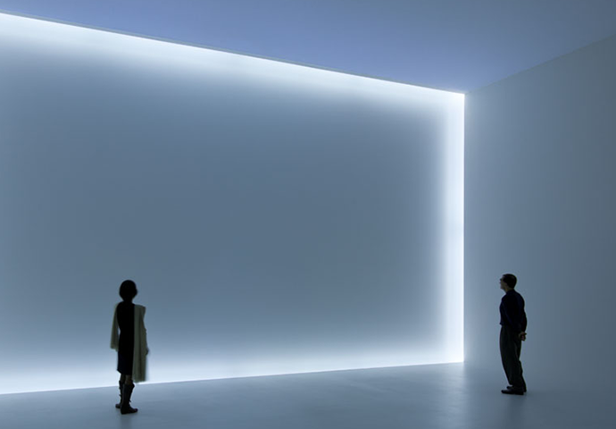

lottemuseum.co.kr
2017.06.01(목) ~ 2017.06.30(금)
[평일] 19:00 [토,일,공휴일] 13:00
롯데문화재단
제임스 터렐(James Turrell), 밥 어윈(Bob Irwin) 과 함께 빛과 공간의 예술가로 유명한 더그 휠러 (1939) 의 1969년 설치 작품이 데이빗 즈워너에서 재설치돼 선보였다. (1. 17-2. 25) 휠러는 1960, 70년대 의 남 캘리포니아에서 성했던 소위 빛공간 운동의 선구자로 불리며, 공간, 빛, 공간에 대한 인식과 경험에 대한 실험을 해왔다.
순백으로 뒤덮힌 공간을 유지하기 위해 입장객은 입구 에서 휜 발싸개를 제공받게 되고, 한번에 입장인원은 10명으로 제한된다. 흰 덮개를 신고 입장을 기다리는 관객 들이 오른편 에 살짝 보였다.
공간에 발을 디디면 우선 눈이 부시고, 그 새하얌에 조금 적 응이 되면 끝을 모르고 뻗은 것 같은 공간감에 약간에 공포가 밀려오기도 한다. 개인적으로 안개가 그렇게 진하 다는 무진, 그러니까 가보지도 못했던 도시가 김승옥의 무진기행 속 묘사 덕에 자꾸 상기되기도 했다.
한라산 같은 높은 산에 오르면 만날 수 있는 독한 진무(塵霧) 에 둘러싸인 경험이랑 비슷한 거 같다. (새집증후군 일으킬 것 같은 페인트와 새설치물들이 뿜어내는, 온갖 유해할 것이 분명한 답답한 냄새와 자연의 향은 극명히 다르지만)